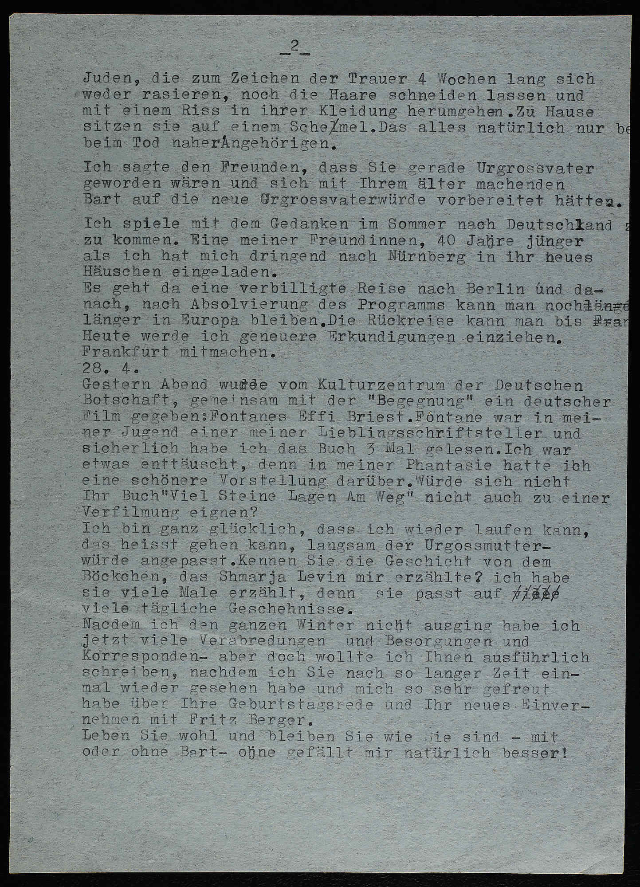
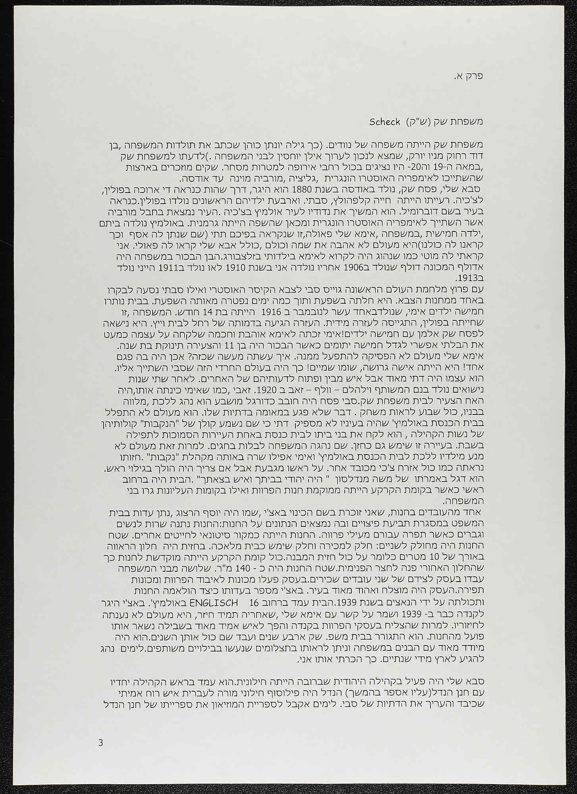
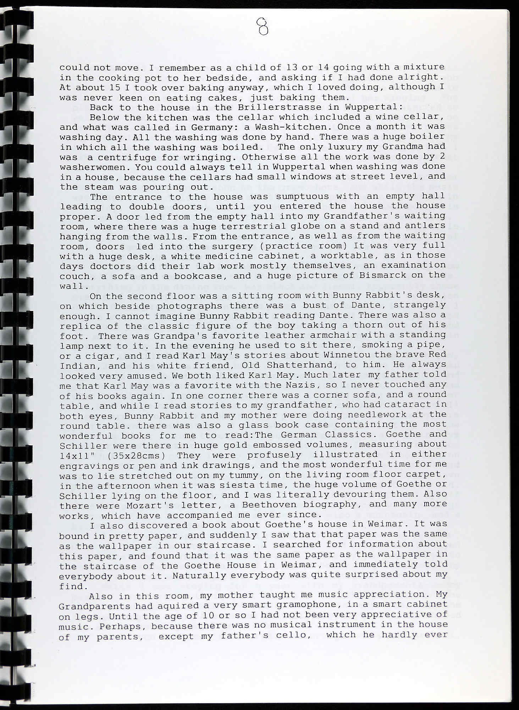

Leoni Landsberg, 1932 – 1971
Eight letters across forty years, anchored on Wiesbaden

Chava Ofek — זיכרון מתוק מארץ המלח
A child of Salzburg writes her parents' Olmütz

Marianne Barton — Two Families
Wolfsohn & Schiff, written in Honiton, Devon, 1999

Alfred Landsberg — Deutschlandfahrt eines Israeli
An Israeli back in Hamburg, 1951 — paired with the John Stern Tagebuch (scans pending)
Joseph Walk — "die alte Heimat"
Oral history, Jerusalem 1991 — a Breslau historian returns without Heimweh
Each mockup is built directly on source transcription — Transkribus HTR for the archival genres, the DGD aligned transcript for the interview — lightly regularised but not paraphrased. The five mockups test whether five genre-templates (Letter, Memoir, Family History, Diary, Interview) can carry real corpus material at scale, without forcing a single Heimat-axis framing.
Thematic exhibit: Return Visits to Germany → — all thirty-six confirmed cases of German-Jewish émigrés going back (trips, invitations, refusals, remigration, oral testimony), gathered across the MTFN and CJH holdings and the Israelkorpus interviews.